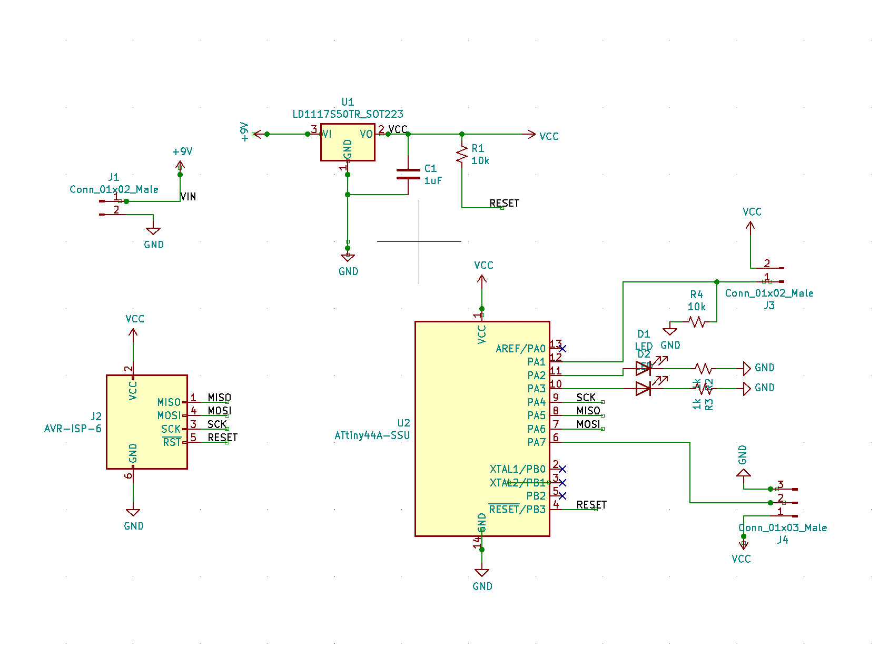

A7: Drive Trains
Inspiration
For this assignment we had to 1) design our own PCB and program it to control a motor, 2) build a drive train mechanism and, 3) actuate it with our motor controlled by our PCB. As Nadya would say: lots of systems integration!

My inspiration for this assignment was Gerbil the jumping robot, which uses a rack and pinion mechanism with a continuous servo to create Gerbil's jumping motion. It seemed a tad too complex for my first drive train ever so I decided to go for a simplfied version of it inspired by the Papermech project.
Schematic + machine design
I spent wayyyy too much time on the schematic given how similar it was from last week's. This is the final version but it went through too many useless iterations (including one without aprogrammer connector.)

The design was, again, adapated from Papermech's rack and pinion 2 mechanism.


Then on to milling and laser cutting.


Laser cut parts, bagged for safe transport.

Soldering
I'm getting much better at SM soldering! Long story short, the first circuit connected with the programmer right away but I realized that my tiny44 was upside down, so it couldn't be programmed. I tried to desolder that component but ripped a few traces in the process so ended up resoldering a new one.


Programming
I started to check if I could control a servo with my sensor, just using Arduino. That worked.

But then programming the PCB turned out challenging because even though programs would upload to my board (such as the Blink for Attiny44), I wasn't able to move my servo.


Blinking! But not moving.


My code.

Danli and Blair helped me troubleshoot and we checked the connections, the code... eventually the programmer even stopped responding, out of the blue.

Mechanism
The mechanism started great but ended up in a could-really-be-improved place.


Mechanism and home work station.
The material of the pinion is not optimal and scrapes, rather than grabs, the rack. The rack also moves too much, something that an extra sleeve might be able to fix.
I spent some time just figuring out continuous servo control. Even though it's not controlled by my PCB, I wanted to see what happened when I uploaded my code to an Arduino, and if it made the servo move the way I wanted.

It did.
Next steps
Debugging the circuit and improving the mechanism by using a different material (maybe a different cardboard, like e-flute instead of c-flute).
The mechanism started great but ended up in a could-really-be-improved place.
Mechanism and home work station.
The material of the pinion is not optimal and scrapes, rather than grabs, the rack. The rack also moves too much, something that an extra sleeve might be able to fix.
I spent some time just figuring out continuous servo control. Even though it's not controlled by my PCB, I wanted to see what happened when I uploaded my code to an Arduino, and if it made the servo move the way I wanted.
It did.
Next steps
Debugging the circuit and improving the mechanism by using a different material (maybe a different cardboard, like e-flute instead of c-flute).